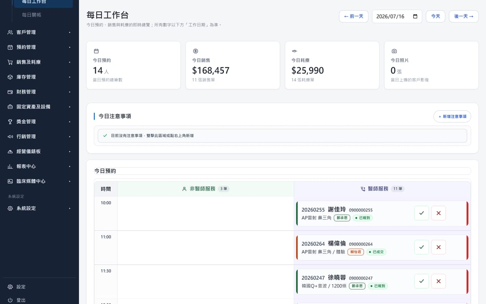
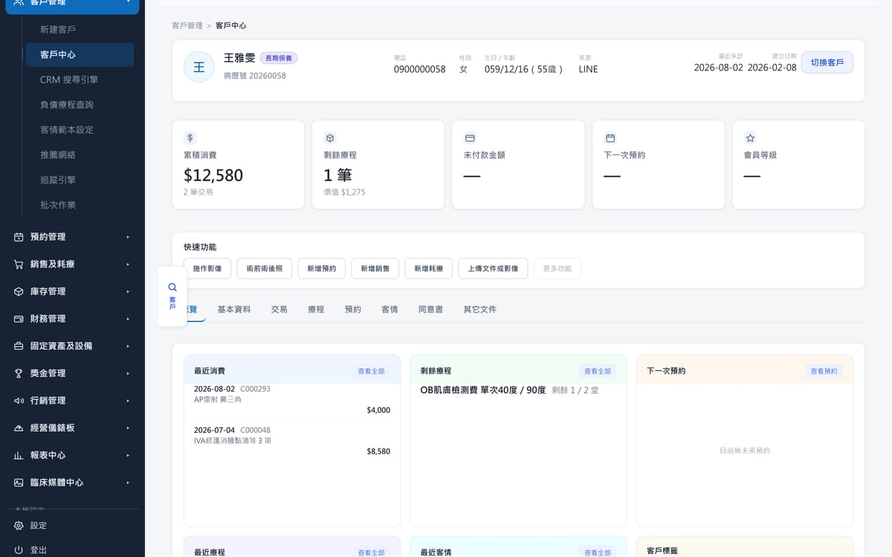
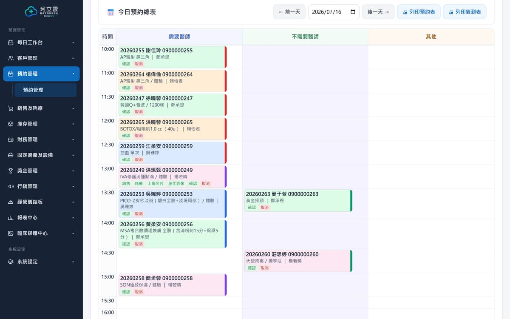
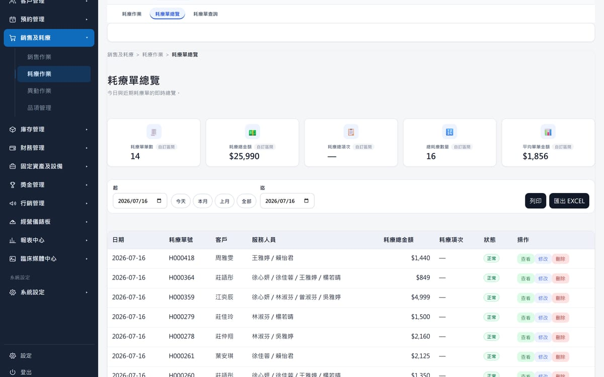
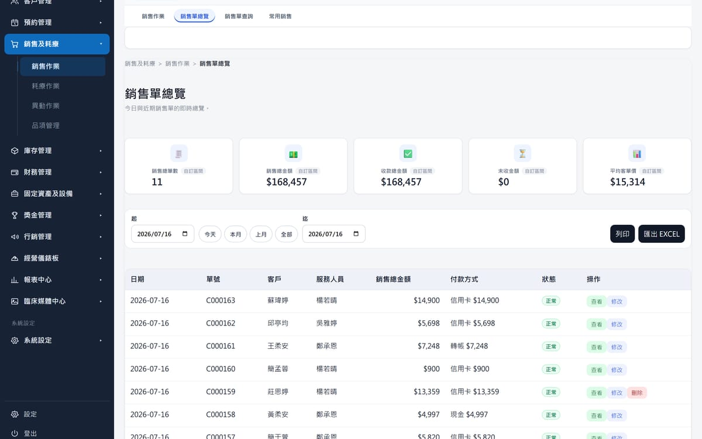
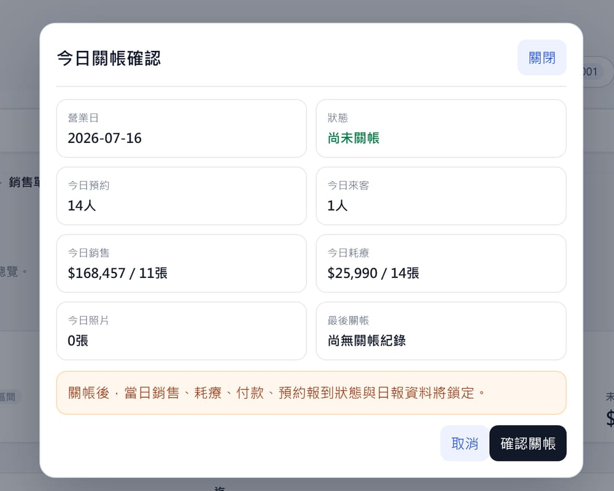
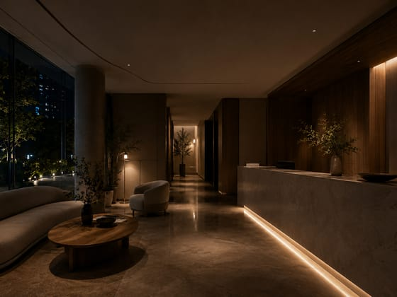

07:40
還沒有人推門進來，
今天的樣子已經在那裡。
誰會來、要做什麼、上一次留下了什麼。不必問，也不必翻。
Chapter 02 · 一天
這一頁不介紹功能。我們只把一天走一遍——從開診之前，走到打烊之後。
每一段工作都會交到下一個人手上。真正會出問題的，從來不是哪一段做得不好， 而是中間斷掉的地方——所以接下來的六個時刻，看的都是同一件事：這一段，接不接得下去。

07:40
誰會來、要做什麼、上一次留下了什麼。不必問，也不必翻。

09:30
做過什麼、還剩幾堂、上次說了什麼。接待的人，不必再問一次。

11:20
誰改了、誰空出來、誰接得上。順序會跟著動，不必重新記一遍。

14:00
誰做的、用了什麼、扣在哪一堂。當下就記在該記的位置。

16:10
買了什麼、付了多少、還差多少。都在同一張單上，收完就結。

18:30
收了多少、做了幾張、還有什麼沒結。一次對完，然後關上。
六個時刻裡，沒有一個是被單獨處理的。早上看到的名單，是昨天留下來的；中午扣掉的那一堂，晚上會出現在關帳的數字裡。
診所真正需要的，從來不是更多欄位，而是讓每一段工作，落在下一段接得住的位置。

所以第二天，
不是重新開始。
本頁六張產品畫面擷取自 ClinicOS 展示環境，工作日期為 2026 年 7 月 16 日。 畫面中的姓名、電話與金額皆為示範資料，不對應任何真實顧客或診所。